从系统的理论观点来看，我们可以设想经验科学的进化过程是一个连续的归纳过程。理论发展起来并以经验定律的形式简洁地综合概括了大量的个别观察的结果，再从这些经验定律，通过比较推敲，确定普遍定律。根据这种看法，科学的发展有些像编纂分类目录。这好像是一种纯粹经验性的工作。
但是这种观点绝不能概括整个实际过程；因为这种观点忽视了在严正科学(严格正确的科学，特别指数学一类的科学。——译者注)的发展过程中直观和演绎思考所起的重要作用。一门科学一经走出它的初始阶段，理论的发展就不再仅仅依靠一个排列的过程来实现。而是研究人员受到经验数据的启发而建立起一个思想体系；一般来说，这个思想体系在逻辑上是用少数的基本假定，即所谓公理，建立起来的。我们将这样的思想体系称为理论。理论有存在的必要的理由乃在于它能把大量的个别观察联系起来，而理论的“真实性”也正在于此。
与同一个经验数据的复合相对应的可能会有好几个彼此颇不相同的理论。但就从这些理论得出的、能够加以检验的推论而言，这几种理论可能是十分一致的，以致难以发现两种理论有任何不一致的推论。例如，在生物学领域中有一个普遍感到兴趣的例子，即一方面有达尔文关于物种通过生存竞争的选择而发展的理论，另一方面有以后天取得的特性可以遗传的假设为基础的物种发展理论。
我们还有另一个例子说明两种理论的推论是颇为一致的，这两种理论就是牛顿力学和广义相对论。这两种理论是这样的一致，以致从广义相对论导出的能够加以检验的推论而为相对论创立前的物理学所未能导出的，到目前为止我们只能找到少数几个，尽管这两种理论的基本假定有着深刻的差别。下面我们将再一次讨论这几个重要的推论，还要讨论迄今已经得到的关于这些推论的经验证据。
(1) 水星近日点的运动
按照牛顿力学和牛顿的引力定律，绕太阳运行的行星围绕太阳(或者说得更正确些，围绕太阳和这个行星的共同重心)描画一个椭圆。在这样的体系中，太阳或者共同重心位于轨道椭圆的一个焦点上，因而在一个行星年的过程中，太阳和行星之间的距离由极小增为极大，随后又减至极小。如果我们在计算中不应用牛顿定律，而引进一个稍有不同的引力定律，我们就会发现，按照这个新的定律，在行星运动的过程中，太阳和行星之间的距离仍表现出周期性的变化；但在这个情况下，太阳和行星的连线(向径)在这样的一个周期中(从近日点——离太阳最近的点——到近日点)所扫过的角将不是360°。因而轨道曲线将不是一个闭合曲线，随着时间的推移轨道曲线将充满轨道平面的一个环形部分，亦即分别以太阳和行星之间的最大距离和最小距离为半径的两个圆之间的环形部分。
按照广义相对论(广义相对论当然与牛顿的理论不同)，行星在其轨道上的运动应与牛顿-开普勒定律有微小的出入，即从一个近日点走到下一个近日点期间，太阳-行星向径所扫过的角度比对应于公转整一周的角度要大，这个差的值由
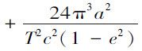
决定。
(注意： 公转整一周对应于物理学中惯用的角的绝对量度中的2π角；从一个近日点到下一个近日点期间，太阳-行星向径所扫过的角大于2π角，上式表出的量值就是这个差。)在此式中，a 表示椭圆的半长轴，e 是椭圆的偏心率，c 是光速，T 是行星公转周期，我们的结果也可以表述如下： 按照广义相对论，椭圆的长轴绕太阳旋转，旋转的方向与行星的轨道运动方向相同。按照理论的要求，这个转动对于水星而言应达到每世纪43″(角度)，但是对于我们的太阳系的其他行星而言，这个转动的量值应该是很小的，是必然观测不到的。［特别是由于下一颗行星——金星——的轨道几乎正好是一个圆，这样就更加难于精确地确定近日点的位置(参阅第85页附注 [1] 。——译者注)。］
事实上天文学家已经发现，按照牛顿的理论计算所观测的水星运动时所达到的精确度是不能满足现时能够达到的观测灵敏度的。在计入其余行星对水星的全部摄动影响以后，发现(勒韦里耶于1859年，牛柯姆［Newcomb］于1895年)仍然遗留下一个无法解释的水星轨道近日点的移动问题，此种移动的量值与上述的每世纪+43″(角度)并无显著的差别。此项经验结果的测不准范围只达到几秒。
(2) 光线在引力场中的偏转
在第22节已经提到，按照广义相对论，一道光线穿过引力场时其路程发生弯曲，此种弯曲情况与抛射一物体通过引力场时其路程发生弯曲相似。根据这个理论，我们应该预期一道光线经过一个天体的近旁时将发生趋向该天体的偏转。对于经过距离太阳中心Δ 个太阳半径处的一道光线而言，偏转角(α )应等于
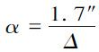
可以补充一句，按照理论，这个偏转的一半是由于太阳的牛顿引力场造成的；另一半是太阳导致的空间几何形变(“弯曲”)造成的。
这个结果可以在日全食时对恒星拍照从实验上进行检验。我们之所以必须等待日全食的唯一原因是由于在所有其他的时间里大气受阳光强烈照射以致看不见位于太阳圆面附近的恒星。所预言的效应可以清楚地从图5中看到。如果没有太阳(S )，一颗实际上可以视为位于无限远的恒星，由地球上观测。将在方向D 1 看到。但是由于来自恒星的光经过太阳时发生偏转，这颗恒星将在方向D 2 看到，亦即这颗恒星的视位置比它的真位置离太阳的中心更远一些。
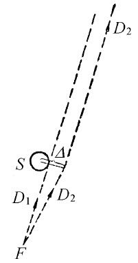
图5
在实践中检验这个问题是按照下述方法进行的。在日食时对太阳附近的恒星拍照。此外，当太阳位于天空的其他位置时，亦即在早几个月或晚几个月时，对这些恒星拍摄另一张照片。与标准照片比较，日食照片上恒星的位置应沿径向外移(离开太阳的中心)，外移的量值对应于角α 。
英国皇家学会和皇家天文学会对这个重要的推论进行了审查，我们深为感激。这两个学会没有被战争和战争所引起的物质上和精神上的种种困难所挫折，他们装备了两个远征观测队——一个到巴西的索布拉尔(Sobral)，一个到西非的比林西卑岛(Principe)——并派出了英国的几位最著名的天文学家［艾丁顿、柯庭汉(Cottingham)、克罗姆林(Crommelin)、戴维逊(Davidson)］，拍摄了1919年5月29日的日食照片。预料到在日食期间拍摄的恒星照片与其他用作比较的照片之间的相对差异只有一毫米的百分之几。因此，为拍摄照片所需的调准工作以及随后对这些照片的量度都需要有很高的准确度。
测量的结果十分圆满地证实了这个理论。观测所得和计算所得的恒星位置偏差(以秒计算)的直角分量有如下表所列：
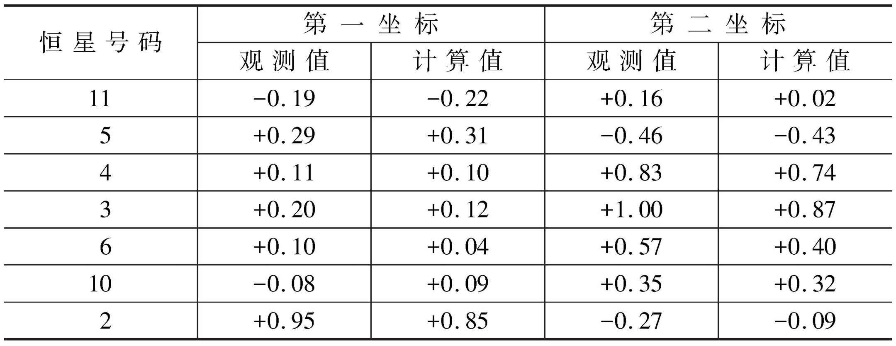
(3) 光谱线的红向移动
在第23节中曾经表明，在一个相对于伽利略系K 而转动的K′ 系中，构造完全一样而且被认定为相对于转动的参考物体保持静止的钟，其走动的时率与其所在的位置有关。现在我们将要定量地研究这个相倚关系。放置于距圆盘中心r 处的一个钟有一个相对于K 的速度，这个速度由
v=ω r
决定，其中ω 表示圆盘K′ 相对于K 的转动角速度。设v 0 表示这个钟相对于K 保持静止时，在单位时间内相对于K 的滴答次数(这个钟的“时率”)，那么当这个钟相对于K 以速度v 运动、但相对于圆盘保持静止时，这个钟的“时率”，按照第12节，将由
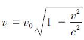
决定，或者以足够的准确度由
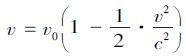
决定。此式也可以写成下述形式：
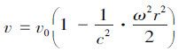
如果我们以φ 表示钟所在的位置和圆盘中心之间的离心力势差，亦即将单位质量从转动的圆盘上钟所在的位置移动到圆盘中心为克服离心力所需要作的功(取负值)，那么我们就有
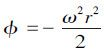
由此得出
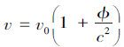
首先我们从此式看到，两个构造完全一样的钟，如果它们的位置与圆盘中心的距离不一样，那么它们走动的时率也不一样。由一个随着圆盘转动的观察者来看，这个结果也是有效的。
现在从圆盘上去判断，圆盘系处在一个引力场中，而引力场的势为φ ，因此，我们所得到的结果对于引力场是十分普遍地成立的。还有，我们可以将发出光谱线的一个原子当作一个钟，这样下述陈述即得以成立：
一个原子吸收的或发出的光的频率与该原子所处在引力场的势有关。
位于一个天体表面上的原子的频率与处于自由空间中的(或位于一个比较小的天体的表面上的)同一元素的原子的频率相比要低一些。这里
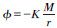
，其中K 是牛顿引力常数，M 是天体的质量。因此，在恒星表面上产生的光谱线与同一元素在地球表面上所产生的光谱线比较，应发生红向移动，移动的量值是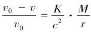
对于太阳而言，理论预计的红向移动约等于波长的百万分之二。对于恒星而言，不可能得出可靠的计算结果，因为质量M 和半径r 一般都是未知的。
此种效应是否存在还是一个未决问题，目前(1920年)天文学家正在以很大的热情从事工作以求这个问题的解决。由于对于太阳而言此种效应很小，因而此种效应是否存在难以作出判断。格雷勃(Grebe)和巴合姆(Bachem)根据他们自己以及艾沃舍德(Evershed)和史瓦兹希耳德(Schwarzschild)对氢光谱带的测量，认为此种效应的存在差不多已经没有疑问；而其他的研究人员，特别是圣约翰(St. John)，根据他们的测量结果，得出了相反的意见。
对恒星进行的统计研究指出，光谱线朝向折射较小的一端的平均位移肯定是存在的；但是，这些位移实际上是否由引力效应导致的，直到目前为止，根据对现有的数据的研究，还不能得出任何确定的结论。在艾·传峦德里希(E. Freundlich)写的题为《广义相对论的验证》的一篇论文中［见柏林Julius Springer出版的《自然科学》(Die Naturwissenschaften),1919年第35期第520页］，已将观测的结果收集在一起，并从我们这里所注意的问题的角度对这些结果进行了详尽的讨论。
无论如何在未来的几年中将会得出一个确定的结论。如果引力势导致的光谱线红向移动并不存在，那么广义相对论就不能成立。另一方面，如果光谱线的位移确实是引力势引起的，那么对于此种位移的研究将会为我们提供关于天体的质量的重要情报。
【英文版附注】光谱线的红向位移已为亚当斯(Adams)于1924年通过对天狼星的密度很大的伴星的观测确定地予以证实。天狼星的伴星所产生的这种效应要比太阳产生的这种效应大三十倍左右。
罗伯特·伍·罗森
[1] 对于这一用语的理解需加小心。